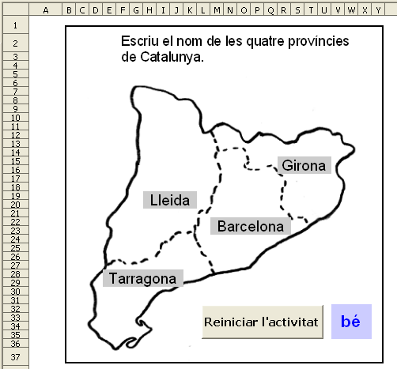
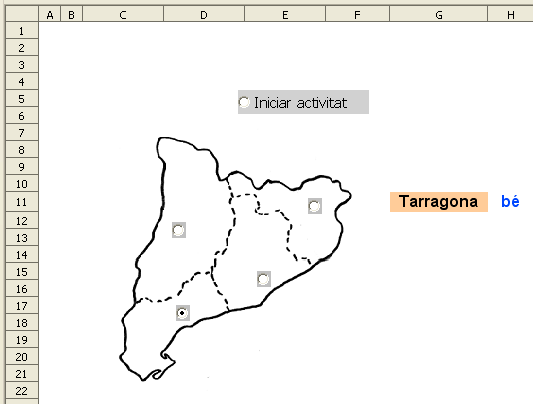

Mapa mut escrivint el nom
Presentació gràfica de l'activitat.

Funcions que es fan servir en aquesta activitat
Objectiu de l'activitat
Completar un mapa mut escrivint el nom de les províncies.
Desenvolupament de l'activitat
1. Obrir el calc i canviar el nom de Full1 pel de M6P1 mapa mut 1
2. Fer que l'ample de les columnes i l'alçáda de les files sigui semblant al gràfic de la presentació de l'activitat.
3. Escriure a la cel·la E2 el següent: Escriure el nom de les quatre províncies de Catalunya.
4. Fusionar les cel·les del rang E2:X2 i ajustar l'alçada perquè es pugui llegir l'escrit en la cel·la E2
5. Fusionar les cel·les dels següents rangs: H19:K20, R15:U16, M22:R232 i E28:J29. Fer que els atributs d'aquestes cel·les siguin semblants als de la presentació gràfica de l'activitat.
7. Fer clic al dibuix i, estant seleccionat el dibuix, fer clic al botó dret del ratolí. En el menú contextuals que apareix, fer clic en organitza i després clic en envia-ho al fons. D'aquesta manera el dibuix es queda més estabilitzat facilitant el treball.
La posició de la imatge del mapa seria aproximadament:
- posició X: 2,3cm
- posició Y: 0,07cm
8. Escriure a la cel·la V32: =SI(I(R15="Girona";H19="Lleida";M22="Barcelona";E28="Tarragona");"bé";"")
9. Fer una macro amb les següent funcions:
- Esborrar els valors les cel·les E28, H19, M22 i R15
- Assignar a la cel·la A1 el valor de0
- Que la cel·la H19 rebi el focus
10. Crear un botó (comandament) de Controls de formulari i assignar-li la macro feta anteriorment.
11. Protegir les cel·les que convingui.
12. Comprovar que l'activitat funcioni correctament.
13. Desar el fitxer amb el nom de M6.
Mapa mut amb botons d'opció
Presentació gràfica de l'activitat.

Funcions que es fan servir en aquesta activitat
Objectiu de l'activitat
Fer mapes muts. El mecanisme d'aquesta activitat a més tenir aplicació a l'àrea del medi social, també es pot aprofitar per treballar l'àrea del medi natural (parts d'una planta, del cos …).
Desenvolupament de l'activitat
1. Obrir el fitxer M6 i canviar el nom de Full2 pel de M6P1 mapa mut 2.
2. Inserir un dibuix de les províncies de Catalunya i situar-lo com es veu a la imatge de presentació de l'activitat.
3. Fer clic al dibuix i, estant seleccionat el dibuix, fer clic al botó dret del ratolí. Apareix un menú contextual i fer clic en organitza i després clic en envia-ho al fons. D'aquesta manera el dibuix es queda més estabilitzat facilitant el treball.
4. Crear un botó d'opció.
5. Seleccionar el botó d'opció creat i fer copia (Ctrl + C) per enganxar-ho (Ctrl + V) quatre vegades obtenint un total de cinc botons d'opció (el que s'havia creat més quatre copies). Quatre d'aquests botons d'opció es colocaran en les zones representatives de les províncies del mapa de Catalunya i l'altre botó d'opció servirà per actualitzar les dades mitjancant una macro feta al botó d'opció que porta com a etiqueta "iniciar activitat" (observar el gràfic de la presentació de l'activitat).
6. Escriure a la cel·la M10: =SI(A1=1;ALEATENTRE(1;4))
7. Escriure a la cel·la L11: 1 i després extendre aquesta cel·la fins la cel·la L14.
8. Escriure el nom de les províncies a les següents cel·les:
- M11: Barcelona
- M12: Tarragona
- M13: Girona
- M14: Lleida
9. Escriure a la cel·la G11: =SI(A1=1;CONSULTA(M10;L11:L14;M11:M14))
Aquesta cel·la G11 pot tenir els següents atributs:
- color de la lletra: negre
- tipus de lletra: Arial
- mida: 14
- color de fons: taronja 4
- centrar horitzontal i verticalment el contingut de les cel·les
10. Enllaçar el botó d'opció situat a la província de Barcelona amb la cel·la K11.
11. Enllaçar el botó d'opció situat a la província de Tarragona amb la cel·la K12
12. Enllaçar el botó d'opció situat a la província de Girona amb la cel·la K13
13. Enllaçar el botó d'opció situat a la província de Lleida amb la cel·la K14
14. Escriure a la cel·la J11: =SI(K11=1;M11;"")
15. Escriure les següents fórmules a les següent cel·les:
- J12: =SI(K12=1;M12;"")
- J13: =SI(K13=1;M13;"")
- J14: =SI(K14=1;M14;"")
16. Escriure a la cel·la I11: =CONCATENA(J11;J12;J13;J14)
17. Escriure a la cel·la H11: =SI(G11="";"";SI(I11="";"";SI(G11=I11;"bé";"no")))
Observar que havent escrit a la cel·la H11: =SI(O(G11="";I11="");"";SI(G11=I11;"bé";"no")) s'aconsegueria el mateix.
Aquesta cel·la H11 pot tenir els següents atributs:
- color de la lletra: blau 7
- tipografia: negreta
- tipus de lletra: Arial
- mida: 14
- centrar horitzontal i verticalment el contingut de la cel·la
18. Al botó d'opció que porta per nom “Iniciar activitat” cal assignar-li una macro amb la següent funció:
- Fer que la cel·la G11 mostri un nom de província. Per fer aquesta acció només cal que el valor de la cel·la A1 sigui igual a 1.
20. Protegir les cel·les que convingui.
21. Ocultar les cel·les que convingui.
22. Protegir la posició i la mida dels botons d'opció.
23. Comprovar que l'activitat funcioni correctament.
24. Desar el fitxer M6.

|
|

|
|
|